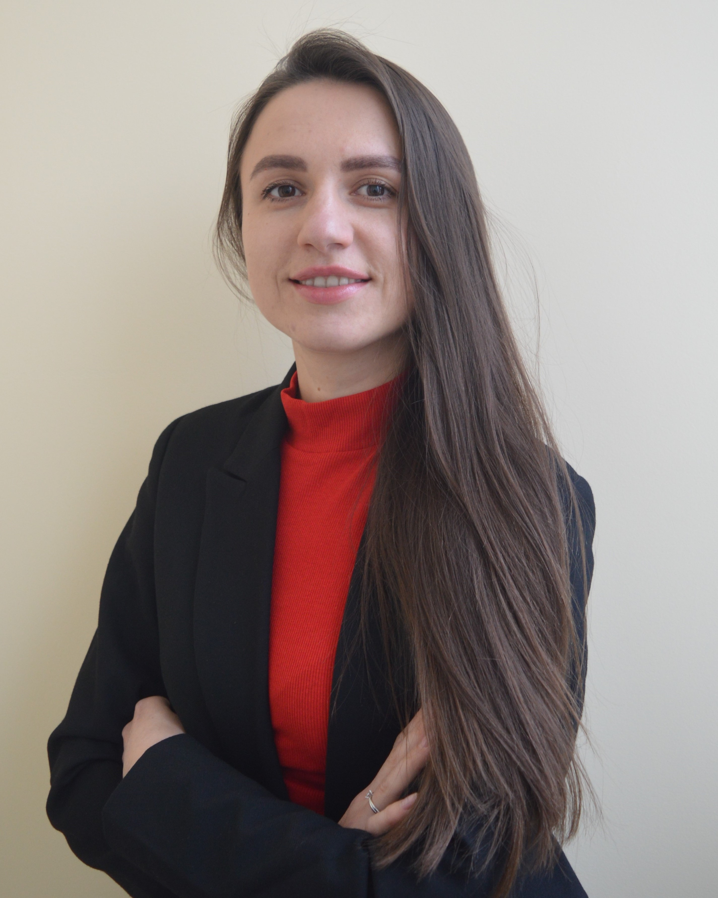

Lyzohub Vira
Junior fronend developer
- GitHub
- LinkedIn
- vira.vilchinska.dk@gmail.com
- +380932134690
- skype: verka.q

My passion is to create web pages. I am an enthusiastic and proactive, hard working and well organized person.
Technical skills:
- GitHub
- Photoshop
- HTML, CSS, JavaScript
- Bootstrap
- React
Experience
- 10/2019 - ...
Support Specialist (Ciklum)
- 4/2021 - 8/2021
Freelance. Work with CMS OpenCart. Mobile adaptation
- 9/2020 - 3/2021
Main Academy. Front-End developer
2018 - MS in System Analysis, Institute of the Humanities and Social Sciences, Lviv Polytechnic National University.